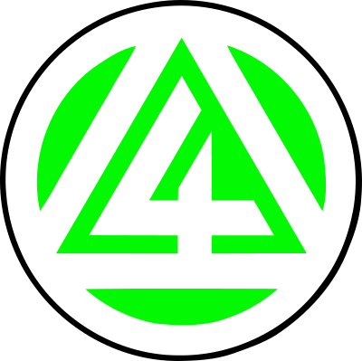

4. Přístav Jana Nerudy
PŘÍSTAVNÍ INTRANET |
|
Rady 4.PVS
Křížek
Přístavní akce
Ubytování
Příspěvky a platby
Přihlášky a registrace
Lodě
Okres
100 let
Kontakty
Odkazy
|
| Rady 4.PVS |
| GOOGLE DOC: Koncept zápisu z rady. |
| Přístavní mailinglist, 4pvs@googlegroups.com, pro přidání napište Hondzikovi. |
| Křížek |
| Technická zařízení: popis a návody k použití GOOGLE DOC: popis technickýcj zařízení. |
| Vozejky: pro rezervaci vozejku přidejte sloupec s datem a zapište, kdo si bere vlek a na co: GOOGLE SHEET: vozejky. |
| Klíče a kódy: Každý oddíl by měl mít vlastní kód na alarm. Klíče vydává Guma proti podpisu do tabulky s klíči vedoucí a kormidelníkům, kteří je potřebují. Nepředávejte si natrvalo mezi sebou klíče bez toho, aby změna byla zanesena v tabulce. |
| Přístavní akce |
| Hory 2020: přihlašování pro děti: GOOGLE FORM: hory, pro vedoucí doodle. |
| Ubytování a úklidy |
| Ubytování a rezervace: https://4pvs.nipax.cz/rezervace. Rezervace spravuje Martina a Jack přes email rezervacekrizek@seznam.cz. Informace pro ubytované jsou k dizpozici zde: PDF: Info pro ubytované |
| Úklidy: domlouvá a spravuje Markéta přes GOOGLE DOC: Úklidy |
| Příspěvky a platby |
| Příspěvky Stav příspěvků je do 2019 na GOOGLE SHEET: příspěvky. Platby příspěvků spravuje Guma. Od 2020 bude Guma spravovat příspěvky podle registrací ve skautisu a bude sám rozesílat upomínky, tzn. všechny oddíly musí do konce listopadu 2019 doplnit ve skautisu správně všechny aktuální členy včetně kontaktů. |
| VS a SS pro platby Variabilní symbolem pro platby je šestimístné registrační číslo člena ve skautisu ve formátu dle pravidel. Specifický symbol má formát dle stejných pravidel |
| Příhlášky a registrace |
| GDPR Přihlášky jsou ke stažení zde PDF: příhláška, DOCX: příhláška. Přesvědčte se, že na přihlášce rodiče zaškrtli souhlasy a napsali číslo pojišťovny. |
| Registrace do skautisu vedoucí oddílů registrují nové mladší členy co nejdříve po přijetí. Novým členům nezapomeňte přidělit šestimístné registrační číslo dle pravidel. |
| Registrace starších členů: neregistrujeme externisty. Členy, kteří jsou registrovaní a již u nás aktivně nevedou odregistrováváme až ve chvíli, kdy s nimi je problém - např. neplacení příspěvků, nebo neplacení STS
(2 upomínky). |
| Lodě |
| Jména pramic v přístavu SHEET: pramice. |
| Okres |
| Existuje mailinglist okresu pro vedoucí a kalendář orjp3-apps@skaut.cz. Pro přidání napište Hondzikovi. |
| Oslavy 100 let přístavu |
| Nápady na aktivity SHEET: aktivity 100 let. |
| Kontakty |
| Středisko: 113.04, Junák - český skaut, 4. přístav Jana Nerudy Praha, z. s., IČ 61387941 |
| Adresa: Pitterova 1/2892, Praha 3, 130 00 |
|
|
| Odkazy |
|
|
Poslední aktualizace: 1. 12. 2019